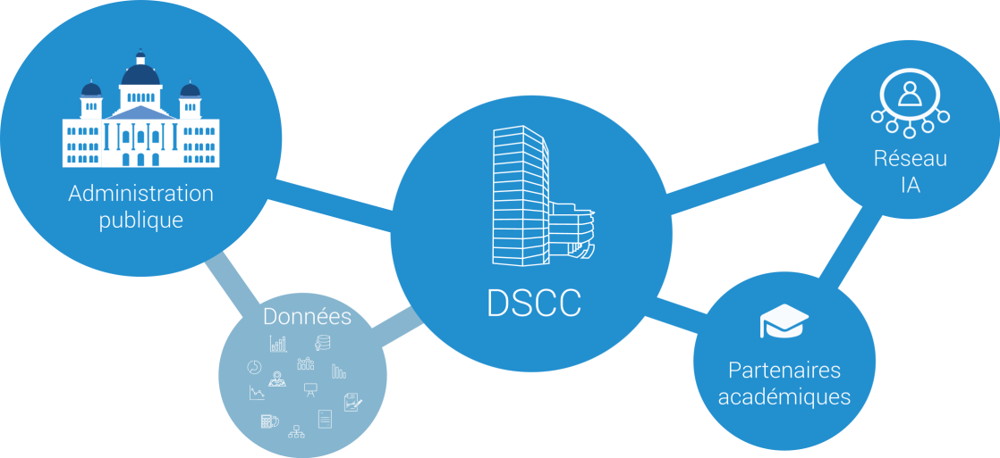
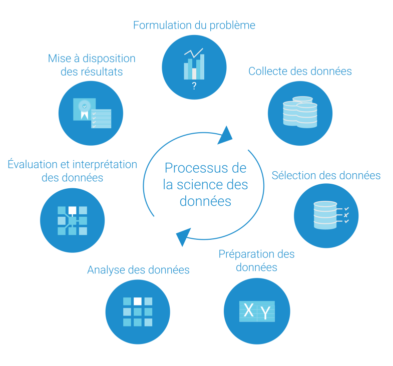
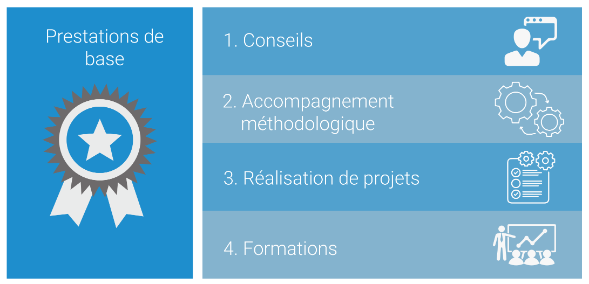
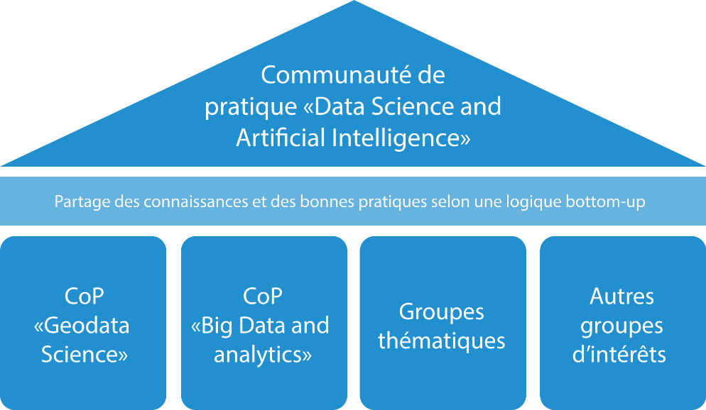
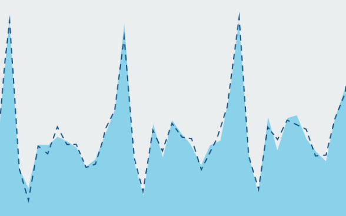

Centre de compétences en science des données
Prestataire faisant partie de l’administration fédérale, le Centre de compétences en science des données (DSCC) fournit des services en matière de science des données et intelligence artificielle (IA) et met son savoir-faire à la disposition de toutes les administrations publiques en Suisse (Confédération, cantons et communes). Dans le but d’apporter des compétences à la pointe du progrès, le centre de compétences met à profit les synergies existantes au sein d’un réseau interconnecté de partenaires universitaires et collabore étroitement avec le domaine recherche et développement du secteur public.

Positionnement du Centre de compétences en science des données (DSCC) au sein de l’écosystème public suisse de la science des données.Brève définition de la science des données
La science des données traite des ensembles de données pour en extraire des connaissances facilitant la prise de décisions. Elle couvre toutes les étapes du processus: formulation du problème, collecte, sélection, préparation et analyse des données, puis évaluation et interprétation des données, enfin communication et mise à disposition des résultats. Par conséquent, les processus de résolution de problèmes et d’amélioration continue constituent les pièces maîtresses de cette science. Conjointement, ces deux processus doivent permettre de résoudre des problèmes complexes, impliquant de grandes quantités de données dans un environnement non structuré, grâce à l’application rigoureuse de méthodes (apprentissage automatique, intelligence artificielle, etc.), de techniques et de pratiques novatrices.

Recourant à une démarche d’amélioration continue, la science des données est un processus de résolution de problèmes rigoureux et documenté.Vision
Nous recourons à la science des données et développons des compétences pour le bien commun dans toute la Suisse (for public good).
Mission
Nous travaillons à la frontière entre la science des données et l’intelligence artificielle. Nous développons des compétences et utilisons les méthodes, techniques et pratiques requises pour créer une nouvelle compréhension du domaine et pour faciliter la prise de décisions pour le bien de la collectivité (for public good).
Valeurs fondamentales
Sécurité des informations, protection des données et de l’information, sécurité et gouvernance des données, non-discrimination, explicabilité, transparence, reproductibilité, neutralité, objectivité, traitement éthique des données et des résultats: telles sont les valeurs fondamentales qui nous caractérisent.
Ces valeurs culminent dans la certitude des citoyens que tous les services de la science des données sont mis à profit dans l’intérêt général. Par exemple, les résultats de chaque projet sont documentés de manière transparente et mis à disposition, pour autant que la législation, en particulier celle sur la protection des données, le permette.
Le Centre de compétences en science des données (DSCC) s’efforce de générer de la valeur pour le bien de la collectivité de manière durable.
Services
Science des données en tant que service
Le Centre de compétences en science des données (DSCC) propose aux unités de l’administration des prestations dans le domaine de la science des données selon le principe de la science des données en tant que service (Data Science as a Service, DSaaS). Dans le cadre de son mandat, selon lequel il incombe au DSCC de fournir des services d’intérêt public, son champ d’action s’étend exclusivement au secteur public, à savoir à la Confédération, aux cantons et aux communes.

Prestations de services en science des données et IA
Dans le cadre de sa mission de prestataire de services d’intérêt public et en étroite collaboration avec ses partenaires universitaires et institutionnels, le DSCC établit des normes de qualité et des directives pour le respect de la protection des données et développe des infrastructures de base (sandboxes) pour les applications utilisées en science des données et IA dans le secteur public.
Le DSCC offre, outre ces prestations de base, les prestations de service suivantes:
- Conseils
Conseils prodigués à l’administration fédérale sur l’application stratégique, tactique et opérationnelle de méthodes et de processus innovants en matière de science des données (analyse du potentiel que présentent les procédures tirées de la statistique avancée, de l’apprentissage automatique, du domaine de l’IA, etc.).
- Accompagnement méthodologique
Accompagnement méthodologique (coaching – training on the job) pour la mise en œuvre de projets réalisés en interne ou confiés à des externes. Intégration des résultats dans les processus administratifs existants dans le but de les optimiser, notamment en offrant une nouvelle perspective.
- Réalisation de projets
Exécution complète de projets pertinents en science des données, de la formulation du problème (compréhension du cas, business understanding) à l’obtention d’un produit minimum viable (minimum viable product, MVP). Si l’ampleur du projet l’exige, le DSCC fait appel à ses partenaires institutionnels et universitaires.
- Formations
Formations (training, training off the job) axées sur l’application des méthodes, techniques et pratiques de la science des données ainsi que sur l’utilisation des technologies et outils informatiques requis.
Communaute
Communauté: Science des données et IA pour le bien commun
Le Centre de compétences en science des données (DSCC) recourt à la science des données et développe des compétences dans l’intérêt public partout en Suisse. Le lien de confiance avec le public est primordial: les services en science des données du DSCC sont proposés en toute transparence. Leurs résultats et les enseignements qui en découlent sont librement accessibles (pour autant que la législation, en particulier celle sur la protection des données, le permette) dans le but de générer une plus-value durable pour l’ensemble de l’administration.

Légende: unique communauté de pratique (Community of Practice – CoP) en matière de science des données au sein de l’administration fédéraleCommunauté de pratique Data Science and Artificial Intelligence (CoP DS&AI)
Dans le cadre de la mise en œuvre de la Stratégie de la Confédération en matière de science des données, le Centre de compétences en sciences des données (DSCC) a fondé la Community of Practice for Data Science and Artificial Intelligence (CoP DS&AI).
La mise en place d’une communauté d’utilisateurs de la science des données au sein de l’administration publique sert l’intérêt général puisqu’elle assure l’échange permanent des savoir-faire et des connaissances techniques. Pour ce faire, la CoP DS&AI cherche à faciliter tous types de conversations «bottom-up» touchant à toute problématique en lien avec la science des données.
Sujets traités par la CoP DS&AI (liste non exhaustive):
- Bonnes pratiques (explicabilité, reproductibilité, etc.)
- Nouvelles méthodes en science des données et partage des connaissances
- Mutualisation des ressources et des outils de science des données
- IA générative et grands modèles de langage (Large Language Models, LLM)
- Défis et bases légales
Partie intégrante du Réseau de compétences en intelligence artificielle, le DSCC encourage les échanges entre divers groupes d’intérêt.
Méthodes statistiques
Des fichiers et des instructions sont mis à la disposition du public. Ces derniers visent à permettre l’application ciblée de méthodes statistiques aux différents types de données. methodes-statistiques
Méthodes de correction des effets calendrier en usage à l’OFS en 2023
Des fichiers et programmes permettant de corriger les effets calendrier de séries temporelles sont mis à disposition par l’Office fédéral de la statistique. Un rapport de méthodes décrit en détail aussi bien les aspects théoriques que l’application pratique de ces fichiers/programmes et leur utilisation.

Construction, choix et application des régresseurs mis à disposition
L’OFS a publié un rapport de méthodes sur la correction des effets calendrier des séries temporelles. Dans ce cadre, des fichiers sont mis à disposition du public sous la forme d’une archive au format .zip.
L’objectif est de permettre aux utilisateurs d’effectuer de façon autonome des corrections d’effets calendrier sur leurs propres séries temporelles. L’archive .zip ci-dessous contient ainsi en les fichiers suivants :
- Des documents texte au format .dat, contenant des “régresseurs” calculés selon plusieurs options de modélisation. Ces fichiers peuvent servir de fichiers d’entrée (input) pour des programmes tels que X13-ARIMA-SEATS (en anglais).
- Des programmes écrits en langage R qui permettent de construire automatiquement les fichiers .dat décrits précédemment,
- Un fichier readme.txt (en anglais).
Un exemple d’utilisation des fichiers d’input au format .dat pour corriger les effets calendrier d’une série temporelle est donné dans le rapport de méthodes en section 5 et en annexe A.
Blog
Bienvenue sur le blog du Centre de compétences en science des données DSCC!
Nous abordons l’ensemble des sujets intéressant la communauté: la Science des Données et l’IA pour le Bien Commun.
- 2025-11 Cinquième réunion de la CoP DS&AI
- 2025-10 L’Office fédéral de la statistique, pionnier de la science des données et de l’IA centrées sur l’humain
- 2024-12 Quatrième rencontre de la CoP DS&AI
- 2024-10 Questions et réponses: confidentialité différentielle
- 2024-09 Troisième réunion de la CoP DS&AI
- 2024-07 Lomas: une plateforme pour l’analyse confidentielle de données
- 2024-06 Collaboration avec OpenDP: l’OFS innove pour protéger la vie privée de la population
- 2024-03 Deuxième réunion de la CoP DS&AI
- 2023-11 Première réunion de la CoP DS&AI
- 2023-09 Amélioration de la qualité de la statistique du trafic
- 2023-05 StatBot.Swiss: discuter avec les données ouvertes
- 2023-02 L’importance de la visualisation des données
- 2022-11 Utilisation des données sur la mobilité en cas d’urgence de santé publique
- 2022-10 HackZurich: mieux comprendre le changement climatique
- 2022-07 Réalisation de projets en science des données
- 2022-07 Écosystème public suisse de la science des données
- 2022-03 Science des données pour le bien commun
Événements
Des événements divers sont organisés par le Centre de compétences en science des données (DSCC) afin de mutualiser les connaissances dans les domaines de la science des données et de l’intelligence artificielle (IA). Ces événements permettent d’assurer un échange d’idées et de bonnes pratiques, conformément aux valeurs de l’Etat de droit.
Les événements organisés par le DSCC sont destinés au personnel des administrations publiques ainsi qu’à leurs partenaires académiques et institutionnels dans le cadre du développement de la communauté de pratique (CoP) : Science des données et IA pour le bien commun. evenements
Série de webinaires: Science des données et IA pour le bien commun
La série de webinaires: Science des données et IA pour le bien commun se concentre sur des thèmes liés à la science des données et à l’intelligence artificielle (IA). seminaires
Le Centre de compétences en science des données (DSCC) organise une série de webinaires: Science des données et IA pour le bien commun s’adressant au personnel des administrations publiques suisses et à leurs partenaires académiques.
Des intervenants suisses et internationaux présentent leurs recherches innovantes en lien avec la science des données et l’intelligence artificielle (IA), conformes aux principes de l’État de droit:
- gouvernance des données;
- protection des données;
- analyse éthique des données;
- explicabilité des algorithmes;
- approche neutre et objective;
- reproductibilité;
- respect des principes de non-discrimination;
- sécurité de l’information;
- transparence.
Groupes d’intérêts
Les groupes d’intérêt permettent aux spécialistes d’échanger des informations sur les domaines de la science des données et de l’intelligence artificielle (IA). groupes-interets
Afin de permettre aux spécialistes de partager des connaissances en science des données et en intelligence artificielle (IA), les groupes d’intérêts visent à partager des idées et du savoir ainsi qu’à donner lieu à des collaborations originales et à des projets innovants. Le Centre de compétences en science des données (DSCC) organise des communautés de pratique reposant sur des domaines d’intérêt partagés en science des données et en intelligence artificielle.
Les domaines d’intérêt peuvent concerner, entre autres, les approches méthodologiques suivantes :
- analyse de causes et effets (inférence causale);
- élaboration de politiques fondées sur des données probantes;
- apprentissage automatique;
- vision par ordinateur et science des géodonnées;
- science des données préservant la vie privée;
- élaboration de plans d’échantillonnage, analyse et modélisation statistiques;
- conception algorithmique;
- infrastructures.
Portfolio
Le Centre de compétences en science des données (DSCC) réalise des projets pour toute l’administration publique suisse. Plusieurs collaborations sont en cours avec des offices fédéraux et des offices de statistique cantonaux. Nous fournissons volontiers des références dans le cadre d’une demande de collaboration. portfolio
StatBot.Swiss
Le projet StatBot.Swiss vise à développer un chatbot capable d’interagir avec les données ouvertes de l’administration publique suisse (Open Government Data, OGD) sous forme de questions-réponses. statbot
| Nom du projet | StatBot.Swiss |
|---|---|
| Prestations | Mise en œuvre du projet |
| Langue(s) | Anglais |
| Utilisateur(s) | Office fédéral de la statistique (OFS) |
| Champ(s) thématique(s) | Reconnaissance textuelle |
| Problématique | chatbot répondant à des questions sur les données statistiques suisses. |
| Solution | collaboration avec la ZHAW, qui propose déjà plusieurs solutions. |
| Justification | la standardisation et l’harmonisation des données permet de constituer une base de données commune. |
| Utilité | permettre à un robot ML de répondre aux questions qui lui sont posées en s’appuyant sur cette base de données. |
| Résultat | faciliter la recherche de données structurées à travers plusieurs niveaux verticaux, via différents acteurs horizontaux. |
| Instances impliquées | DSCC, ZHAW, OFIT, CORSTAT (office de la statistique du canton de Bâle-Ville, office de la statistique de la ville de Zurich, office de la statistique du canton de Zurich). |
| Groupe cible | citoyens ayant des questions |
| Date de début / date de fin | 2021 / 2023 OFS / DSCC: 1.12.22 – 31.12.23 |
| État du projet (degré de maturité) | Entre la phase de conception et le développement du prototype |
| Direction du projet | OFS / DSCC et CORSTAT |
| Personne(s) de contact | Christine Choirat, Patrick Arnecke |
| Type de données | Données structurées |
| Composantes de l’apprentissage automatique | Apprentissage supervisé |
Publications
Amélioration de la qualité de la statistique du trafic
Le projet vise à automatiser la détection des erreurs de mesure des capteurs sur les routes nationales et la reconstruction des données manquantes. Une boîte à outils sera développée pour aider les collaborateurs de l’Office fédéral des routes (OFROU) à prendre des décisions basées sur des données. astra
| Nom du projet | Amélioration de la qualité de la statistique du trafic |
|---|---|
| Prestations | Mise en œuvre du projet |
| Langue(s) | Anglais |
| Utilisateur(s) | Office fédéral des routes (OFROU) |
| Champ(s) thématique(s) | Contrôle de plausibilité, recherche et imputation des données manquantes |
| Date de début / date de fin | 2021, en continu |
| Direction du projet | Office fédéral des routes (OFROU) |
| Type de données | Données structurées des capteurs |
| Composantes de l’apprentissage automatique | Apprentissage supervisé: modèles additifs généralisés |
L’équipe du DSCC
Nous considérons la science des données comme un sport d’équipe.
Le Centre de compétences en science des données (DSCC) est constitué d’une équipe internationale de scientifiques, bénéficiant d’une formation académique de haut niveau dans des domaines tels que la science des données, l’ingénierie des données, l’informatique, le développement de logiciels, l’analyse commerciale, les mathématiques, les statistiques et les processus de décision.
Les membres de notre équipe disposent notamment de connaissances pointues dans les domaines suivants:
Compétences méthodologiques
- Analyse causale (recherche des causes).
- Politique fondée sur des faits probants.
- Apprentissage automatique et reconnaissance d’images.
- Développement d’un produit minimum viable (MVP).
- Science des données et protection de la sphère privée.
- Élaboration de plans d’échantillonnage, analyse et modélisation statistiques.
- Algorithmes adaptés à des besoins particuliers
Compétences techniques
- Développement d’outils pour la collecte et le traitement des données.
- Développement d’outils pour la visualisation et la publication des données.
- Programmation R et Python.
Nous bénéficions d’une vaste expérience dans la prestation de services au secteur public, notamment aux offices fédéraux et cantonaux.
Nous participons en outre aux projets de recherche des Nations Unies, de la Commission Economique des Nations Unies pour l’Europe (CEE-ONU) et d’Eurostat.
Les services du DSCC sont disponibles en français, en allemand, en italien et en anglais.